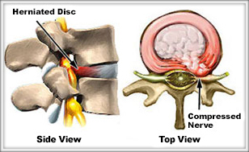

Low Back Pain in a Child: When should you be worried?
— Chelsea Jasper, APRN, FNP-C
Children's back pain is unlike that which is experienced by adults. Adults are more susceptible to back pain because their backs are less flexible and less resilient. This fact makes them more prone to injuries than children. Because acute or chronic back pain is less common for kids, parents should take it very seriously and seek a doctor's advice if their child complains of back pain. This is even more important if the child is 4 years old or younger and the pain is accompanied by:
- Fever or weight loss
- Weakness or numbness
- Trouble walking
- Pain that radiates down one or both legs
- Bowel or bladder problems
- Pain that keeps the child from sleeping
Young children typically do not put their backs under the same levels of stress as older children, teenagers, or adults. For this reason, back pains related to injuries are less common, and if they do arise are usually only short-lived. Young kids are more reactive to activities that cause discomfort and will usually not repeat these actions. This natural self-limitation will aid in the recovery of injuries if any do occur. For these reasons, back pain in children is rare. In fact, if pain does persist, it can be associated with more serious disorders such as spinal tumors, growths, or infection. While spinal tumors in children are very rare, this is certainly something that should not be missed. Infection is also uncommon, but when present can be due to a discitis. This type of infection would need immediate attention. Signs of limping, hip or back pain, and the inability to flex the back could signal the presence of a discitis. Research shows that 70% of toddlers with discitis refuse to walk. An MRI can diagnosis these conditions.
Older children and teenagers are more likely to be aggressive with their backs. They are more active and take less care to prevent injury. They are more likely to push the limits of their physical capabilities. It is in this age group where disc and joint injuries can occur. The biggest problem with injuries in older children and teens is that they are very likely to repeat the damaging activity and reinjure themselves. At this point, they begin the long-term process of overuse injuries. The best remedy for these types of conditions is rest. Tumors and infections can uncommonly occur in older kids and teenagers, but back pain is more frequently related to sports injuries or overuse syndromes. These injuries include pars defects, spondylolithesis, disc herniations, and vertebral fractures. A pars defect, is a defect of the joint between vertebral bones, and occurs when someone hyperextends their back repetitively. This is commonly seen in teenagers who play high impact competitive sports including football, cheerleading, and gymnastics. Recuperation can take from 1 to 3 months. A pars defect can also result from a congenital process without an injury. Spondylolithesis is when one vertebrae 'slips' over another vertebrae. This condition can progress through adolescence and may eventually require surgery. Disc injuries or vertebral fractures can occur when the child lands hard on his feet or buttocks. The force is transmitted to the spine and causes the fracture or damage to the discs. If the disc herniates then the spinal cord or nerve roots can be compressed. This can send pain along the length of the nerve and down the leg. Physical therapy and anti-inflammatories can ease these symptoms, but sometimes surgery is required to relieve the pressure on the nerve.
Juvenile rheumatoid arthritis can also be a cause of back pain in children. This is an autoimmune disease where the child's immune system attacks the body's own tissues. This can cause pain in the joints, including in the back. There is no cure for this condition, but treatments are available to help manage the pain.
More serious conditions need early identification or treatment. Pediatricians will usually perform a detailed consultation and examination to identify the root of the problem. Radiological studies are commonly used to further determine the cause. A referral to a spine specialist for further examinations and diagnostic testing can be expected in persistent or difficult cases.
Sources:
Back Pain in Children, http://orthoinfo.aaos.org/topic.cfm?topic=a00036, 2010
Back Pain in Kids and Teens, http://www.spine-health.com/conditions/back-pain/back-pain-kids-and-teens, 2002
The Journal of Bone and Joint Surgery: Discitis in Young Children, The Hospital for Children
Evolution of Back Pain in Children and Adolescence, http://www.aafp.org/afp/2007/1201/p1669.html, 2007
Child Back Pain and Treatments, http://www.footphysics.co.uk/child-pain-injury-conditions/treating-back-pain-in-children/#Treatment-of-Juvenile-Rheumatoid-Arthritis, 2010-11
|
Do I have a slipped disc and what are my treatment options?
— Kevin P. McCarthy, MD
Herniated lumbar discs are one of the most common low back injuries seen in clinical practice. Typical early presenting symptoms are low back or buttock pain. As the disc herniation progresses, pain and numbness can develop in the leg. Surprisingly, this can be accompanied by improvement in the low back pain. Treatment options are dependent on the patients presenting symptoms, physical exam, and previous treatment results.
Patients presenting with a short duration of symptoms will frequently be treated with medication and home exercises or formal physical therapy. If the symptoms persist or the patient presents with any weakness or neurologic findings, then often an MRI should be ordered to further evaluate. An MRI allows the physician to see the inside of the spine including the discs, nerves, spinal cord, ligaments and muscular tissue. This aids greatly in confirming the suspected diagnosis and guiding treatment.
Patients with persistent symptoms and a confirmed diagnosis have several early treatment options. These can include treatment with various medications, physical therapy, and epidural injections. Physical therapy can be less effective in patients with severe leg pain and is often elected for those with a larger component of low back discomfort. For those with significant leg pain, epidural steroid injections can be the fastest and most effective method of obtaining pain relief for the patient. Epidural injections are performed under sedation with x-ray guidance as an outpatient procedure. Medication is injected around the irritated nerve, which was confirmed on the previous MRI. Patients typically go home 30 minutes after the procedure and can experience significant relief within days.
Patients with continued intractable pain despite other treatments are often excellent candidates for surgical intervention. In addition, surgery would likely be recommended to any patients who have developed weakness or any neurologic dysfunction. The primary goal of surgery is to remove the herniated disc fragment and alleviate the pressure and irritation on the nerve. This can be accomplished through various techniques.
Standard micro-discectomy surgery is performed through a small 2-centimeter incision. Using microscopic magnification and special instruments, a small rim of bone and ligament is removed to allow access to the nerve. The nerve is then carefully and gently retracted to reveal the herniated disc fragment. This is removed using a special grasper. Once it is confirmed visually that the whole herniated disc has been removed then the wound is closed.
The herniated disc fragment can also be removed endoscopically. This is accomplished through a small poke incision of only a few millimeters. The nerve and disc are then visualized using a special scope similar to that that is used in shoulder, knee or gall bladder surgery. The disc fragment can then be removed using special instruments or melted using laser and/or radiofrequency waves. This can all be accomplished while directly visualizing the process on a video monitor.
Each of these procedures is done on an outpatient basis and the patient will often obtain significant immediate relief and be ready for discharge home within hours of completion. Some activity restrictions are often placed on the patient for a period of 6 weeks postoperatively.
THREE FREE Seminars: Learn how to treat your back pain & get questions answered by the experts!
Join Dr. Chambliss Harrod of the Spine Center, Chris Fussell, DPT of Dutch Physical Therapy and Dr. Barrett Johnson of Advanced Pain Institute for a series of 3 FREE seminars on the latest technology in diagnosis and treatment options for back pain.
Dr. Barrett Johnson:
Pain Management Treatment Options
6:30pm, Wednesday, January 9, 2013
Dr. Chambliss Harrod:
Surgical Options for Managing Unresolved Back Pain
6:30pm, Wednesday, January 16, 2013
Chris Fussell, DPT
Conservative Treatment with Physical Therapy
6:30pm, Wednesday, January 30, 2013
Location:
Denham Springs-Walker Livingston
Parish Library
8101 U.S. 190, Denham Springs, LA
For more info & to sign up, contact Amy
( 225-588-2068 or amy@dutchpt.com ). |
|
|
| |